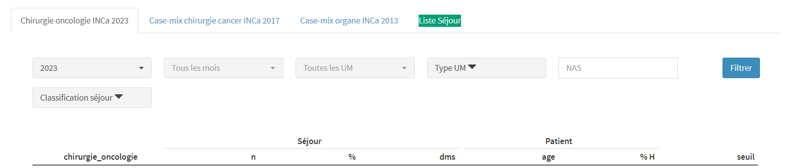
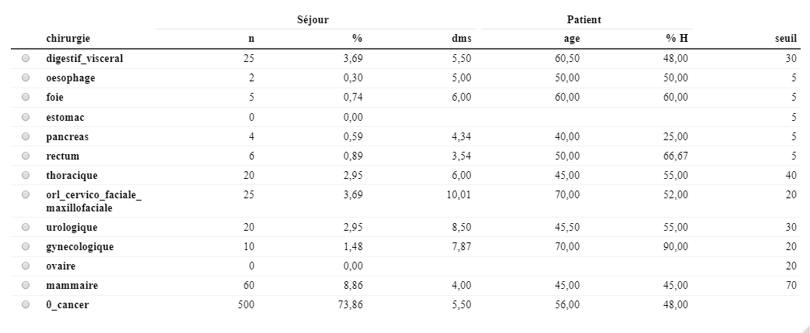

Ecran Cancérologie
Analyses PMSI de l’activité Cancérologie et des seuils d’autorisation
Introduction
Depuis le 1er juin 2023 est entré en vigueur un nouveau dispositif d’autorisation de l’activité de soins de traitement du cancer, basé sur une logique de seuils minimaux d’activité, de gradation (mention A, B ou C) et de traitement curatif des traitements et pathologies cancéreuses.
Pour chacune des chirurgies oncologiques (mammaire, thoracique, sphère oto-rhino-laryngée, cervico-faciale et maxillofaciale, urologique, digestive et viscérale, gynécologique), un algorithme est proposé pour déterminer si une hospitalisation est retenue ou pas pour la mesure d’activité soumise à seuil de la chirurgie oncologique concernée.
Ces algorithmes sont des arbres de décisions avec des noeuds constitués de variables PMSI du type “codage PMSI présent parmi une liste de codage”. Source “NOTICE TECHNIQUE POUR LA MESURE DES ACTIVITÉS SOUMISES À SEUILS” (INCa)
Pour les activités de radiothérapie externe et de de traitements médicamenteux systémiques du cancer chez l’adulte (TMSC), elles aussi soumise à seuil : analyses dans PMSISoft mises en ligne courant juillet 2023.
Historique depuis 2019.
Chemin de l’écran
Analyses MCO > Cancérologie
Filtres

Liste des filtres :
- Année
- Mois
- UM
- Autorisation
- Mode d’hospitalisation
- NAS
- Classification des séjours (CMD, sous-CMD, CMKZ, GMHM, sévérité-durée)
Case-mix “Chirurgie oncologique INCa 2023”
 (les nombres affichés dans ce case-mix, produits manuellement, sont sans signification, uniquement à visée illustrative)
Le case-mix comprend 13 lignes correspondant aux 12 chirurgies oncologiques du cahier des charges et à une ligne 0_cancer regroupant toutes les hospitalisations ne relevant d’aucune des 12 chirurgies oncologiques.
La correspondance entre les intitulés normalisées des chirurgies et les intitulés du cahier des charges est transparente.
Exemples : digestif_visceral est pour “Chirurgie oncologique digestive et viscérale (mentions A1-B1)”, oesophage est pour “Chirurgie oncologique de l’œsophage ou de la jonction œsophagienne”, etc…
Les variables “Séjour” :
n = nombre de séjours 1 repérés par l’algorithme pour la chirurgie de la ligne
% = part des séjours avec la chirurgie de la ligne par rapport à l’ensemble des séjours
dms = durée moyenne de séjour (au sens PMSI : date fin séjour - date début séjour) des séjours de la ligne
Les variables “Patient” :
age = moyenne des âges en entrée de séjour des séjours de la ligne
% H = part des séjours de la ligne avec sexe = 1
Variable “Seuil” :
Les seuils annuels nb_jp_sej en nombre de séjours par chirurgie oncologique
Export csv et JSON des informations du casemix via les liens Télécharger casemix (format JSON) et Télécharger casemix (format CSV)
Accès Professionnel
Fonctionnalités uniquement dans l’accès Professionnel :
- Filtres NAS, sous-CMD, CMKZ, GHM, Sévérité-Durée
- Variables dms dans le case-mix
- Accès aux listes des séjours de chaque ligne du case-mix
- Export csv et JSON de la liste des séjours sélectionnés avec des variables caractérisant les séjours (nas, dp_sej, annee_sortie_sej, …) et les variables calculés par PMSISoft permettant la production du case-mix (chirurgie_A1_B1 = variable logique indiquant si le séjour relève de la chirurgie oncologique digestive et viscérale, chirurgie_B1_oesophage = variable logique indiquant si le séjour relève de la chirurgie oncologique de l’œsophage ou de la jonction œsophagienne, …). Via les liens Télécharger séjours (format JSON) et Télécharger séjours (format CSV)
Demande d’accès Standard
Pour demander un accès Standard à PMSISoft MCO pour votre établissement, nous contacter (en sélectionnant l’option “Demande accès PMSISoft Standard”)
Pour aller plus loin
- article “”
- code R
Notes de bas de page
sous-entendu “nombre de séjours du périmètre des séjours sélectionnés via les filtres”.
Remarque valable pour toutes les variables du case-mix↩︎